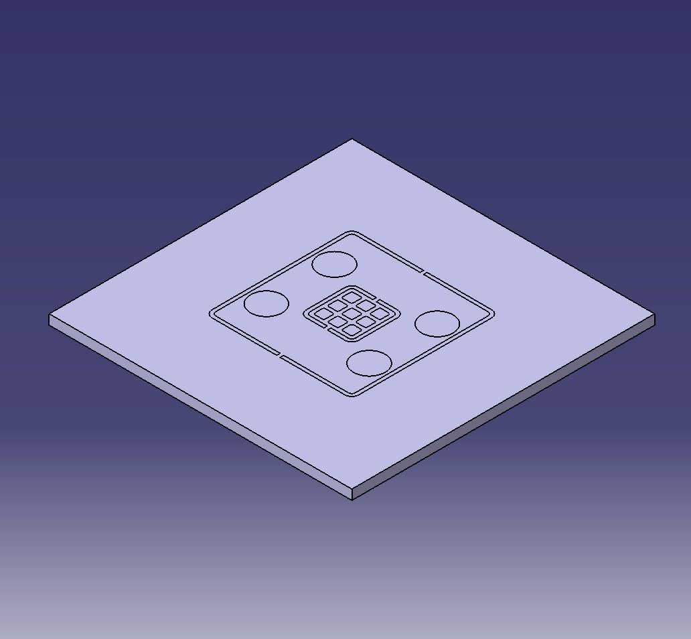
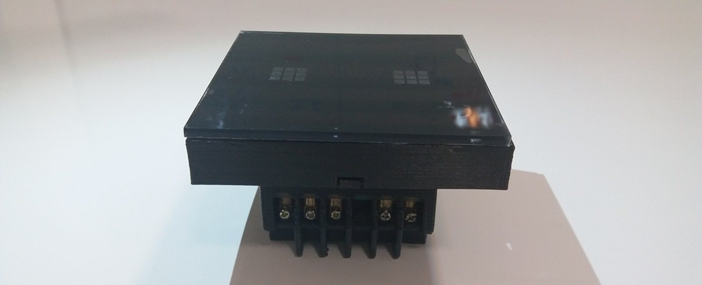

Smart Hospital Switch
Gesture-based electrical control concept for emergency-room environments.
Technical Highlights
- Researched healthcare technology needs for emergency room environments.
- Designed and tested the PCB-based smart switch.
- Implemented adjustable functional distance for flexible clinical use.
Achieved 94% gesture detection success rate and enabled touchless electrical control for emergency rooms.